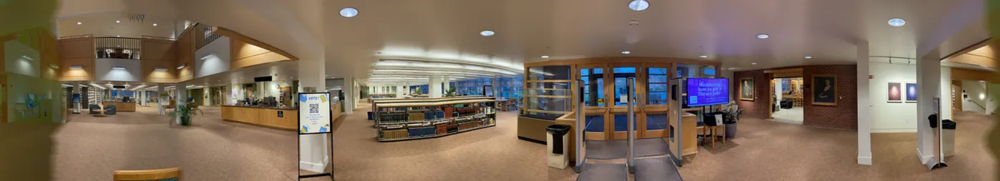
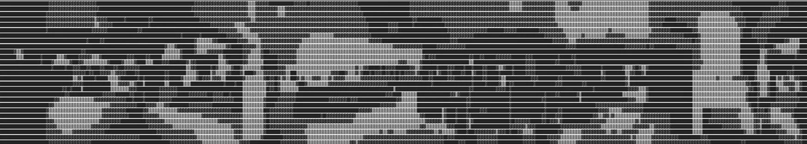
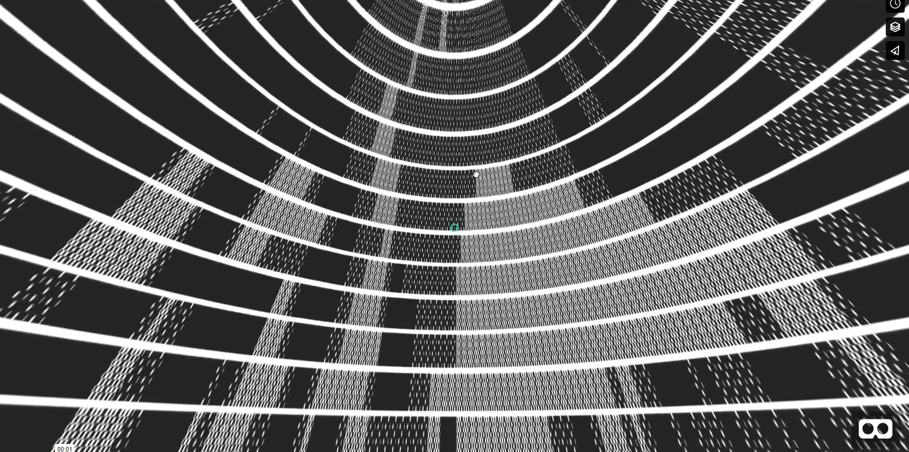

Henry K. Young
is 22 years old from Portland, Oregon. He recently graduated from Whitman College majoring in Theory and Practice in Digital Design. The individually planned major combines new media art, computer science, and art history with a focus on modern art and architecture. He realized he was interested in design in highschool after taking a summer course at Sci-Arc. Henry uses processing, figma, and various coding languages to create interactive interfaces, reflecting his Brutalist inspired style. He is familiar with python, C++, java, and html/javascript. Henry hopes to explore a career in User Experience Design or Architecture.
While taking a class on Modernism in Art and Architecture, I decided to dedicate my album cover project to the same concepts we were learning about abstraction in modern art. After analyzing the work Untitled 1928 by Frantisek Kupka, I wanted to explore the motif of circular forms derived from vinyl and CDs. Similar to the way BMW’s logo represents the moving propeller of a plane, Kupka’s untitled piece is an exploration of movement in analog machine-like shapes such as the record player. Through parallel lines and forms seemingly rotating around focal point points, Kupka evokes the same feelings that music does. I used the Frightnrs Daptone album as a starting point, both because it already had the circular form I was looking for and because I loved the stark black and white design with the simple three dimensional typeface. In my redesign for the album cover, I experimented with essential forms like the square and rectangle as well as typography to achieve a prototype for an album cover that expressed the same emotional responses that was achieved by the artists of abstraction. Ultimately, though, this project taught me a valuable lesson. After all of my hyperfixation on form and abstraction, the most impactful feature of my project to the rest of my class was the animation of the vinyl coming out of the sleeve which had taken less than 5 minutes to do.
Design System + Processing FinalIn my final project in my digital productions course, I wanted to formalize and document a process I had already been implementing in my work. In one of our previous exercises we worked with various creative techniques from the Studio Size website based on the Luke Sullivan’s book ‘Hey, Whipple, Squeeze This.’ I found myself drawn to techniques such as abstract, exaggerate, and reduce. Using these techniques on typefaces, and more specifically the stroke on typefaces became a trademark of my personal style. In a world of endless content, I think more unique solutions will be found through pushing our design tools to their limits or using them in ways they were never meant to be used. Truly mastering a tool such as Figma should not be measured by your knowledge of its capabilities, but also by your knowledge of its limitations and your ability to push those limitations. An extension of this project would be to animate this process, but as of now Figma cannot smart animate stroke weight. This is one of the reasons I moved towards processing, because I want my imagination to be my only limitation, and because I want a more fundamental understanding of digital tools to strengthen myself as a designer. The value of a design system lies in its flexibility, and my design system can be performed on any shape or typeface. I have an appreciation for many different styles of type, and this process creates unity between highly disparate typefaces. In brutalist fashion, this process of expanding the stroke and turning it into its own form makes use of the typeface’s qualities as a vector, composed of anchor points and bezier curves. In Brutalist architecture, the core argument is not that pretty things are inherently bad, but that pretty things are used to lie. The rounded corners and bright colors that apple and google popularized have been used to hide a consumer enterprise using child labor and selling personal information. Similar to brutalist design and anti design, my design system abstracts the anchor points of the typeface to create something bold and disruptive, while revealing its true nature. My processing final is also an extension of these ideas, grappling with the dichotomy between beautiful lies and ugly truths within the world of UX and web design, human instabilities and contradictions manifested within apps and websites.
Random Grit + Colorful GridAs I discussed in my manifesto, much of my work contemplates the idea of pattern. These two processing sketches particularly exhibit these concepts. The first, random grit, was adapted from Tim Rodenbroker’s exercise to mimic the dirt and grime on old film. My approach was to first make a sketch that would draw random shapes, combinations of straight lines and bezier curves, within the allotted dimensions. The result of this stepping stone, to me at least, ended up being more meaningful than the end goal of the exercise. The program endlessly creates diverse randomized shapes, and the pattern that forms is more impactful than any one random shape. The sequence turns rigid, static shapes into a turbulent yet quasi-organic movement. The impermanence of the shapes forces you to see design not as a single, tangible object, but instead a set of rules or a design system with an infinite output. Only by watching the sequence can you start to understand the rules that govern the pattern.
The second sketch takes a slightly different approach. This colorful grid is a project I have spent many iterations improving with the goal of experimenting and refining. Through this project I have experimented with data structures, color, and interactions, all confined within a grid. While making a grid is not the most difficult or original undertaking within creative coding, the grid is significant because to me it represents a foundation to build from while creating a sense of the infinite. In combination with the mouse interaction which controls the size of the grid, it brings a new dimension to this concept of scale and the sublime. The grid itself isn’t visually stunning, but it allows the smaller details to shine. I intentionally saved the color information in a data structure so that it could be updated independently from the interaction with the mouse position. In other words the interaction remains smooth and fluid, while the changes in color are choppy like archaic/rudimentary technology.
Similar to the principles of Gestalt psychology, in both of my sketches there is an emphasis on the relationship between parts and the whole. The whole is greater than the sum of its parts, whether the ‘whole’ is the sequence that forms, or the visual combined with an interaction. In both sketches I also experiment with the aesthetics and tropes of old digital media. I think it is important to reflect on the course technology has taken over time, and to be more critical about what we really want out of it.
In this project I used Microsoft Kinect to make a drawing program. I used a WebSocket to send JSON data over a server between a python program running the Kinect and an HTML/Javascript page serving as the user interface. Kinect and other technologies like virtual and augmented reality create new opportunities to innovate. I noticed that all drawing programs I have used, except maybe newer programs that use the apple pencil, don’t have the ability to dynamically change the traits of the brush while drawing. The apple pencil has the ability to change the stroke with the tilt of the pencil and the force used while drawing. Rather than use an external tool to toggle the brush characteristics, the body could be used instead. The kinect can discern between left hand and right hand, as well as whether the hand is open or closed, so these were the mechanisms that I used to dictate the brush. While you draw with your right hand, your horizontal positioning of your left hand is used to toggle between the possible variable traits. In this class we had a special emphasis on accessibility, so to make my drawing program accessible to a wider audience. I made it so that the left and right hands were not calibrated to a ‘standard’ wingspan or distance, it would be calibrated to the maximum wingspan of that specific user. This way a user would never have an issue reaching the edge of the frame while drawing etc.
Ray Tracer.jpg)


In the course Interactive Computer Graphics, we spent the majority of the semester working on a ray tracer that would simulate real lighting on spheres and planes. Using C++, we formed an understanding of vectors, and the equations necessary for ray-object intersection, direct and ambient lighting, and more. For my personal extension of the project, I decided to do texture mapping. With planes this is relatively straightforward, but with spheres it requires wrapping or mapping a two dimensional plane onto a sphere. This process was merely a technical exercise in math and computer science until I gained valuable insights later through an unlikely source.
In an Art History course on the Art of Colonial India, I examined a French naval maritime map from the year 1789. In cartography back then they used the same equation but to reverse the process, turning the spherical space of earth and mapping it onto a two dimensional plane. The term for this organization of space on maps is called mercator projections. Mercator projections are frequently criticized for distortion, manipulating space near the poles to appear larger than it actually is. With Mercator Projections, there are two different methods of plotting your course. Rhumb lines, or loxodromes, are lines that maintain a constant angle from the lines of longitude and latitude. This was beneficial because it allowed ships to use a method called dead reckoning in which they would navigate in a straight line using the last known position, course, and speed. Although this method is practical with the technology available, it is not the shortest distance from point to point. Great Circle, or orthodromes, are the quickest way between two points on a sphere, however they are curved lines on a map using mercator projections and do not maintain a constant course. Maps, then, do not show objective truth like they were purported to. Along with the addition of details like the fleur de lis and the Paris meridian, it becomes clear that utilitarian and scientific maps also serve the purpose of naturalizing French possession of India and justifying French colonization of India as objective, scientific truth.
Raytracing, similarly, is taught as a somewhat scientific process, meant to recreate reality as accurately and objectively as possible. By using the same equation as the mercator projections, by extension it is subject to the same distortions. Likewise, the lighting equations are not necessarily picture perfect, they are simply the most realistic lighting we can achieve with the computing power we have available. As Engel argues, the perfect map with every detail would defeat the very purpose of cartography: to represent land for the sake of personal, social, and cultural means. I think this could just as easily be applied to ray tracers. The purpose of tools such as cartography and raytracing, is cultural just as much as utilitarian. This doesn’t diminish the achievement of coding a functioning raytracer, but it is also crucial to understand that even the most seemingly objective forms of media have cultural implications. One day I hope to extend my raytracer further, texture mapping images onto planes and spheres.
Edney, “Mapping an Empire: The Geographical Construction of British India, 25
Another World
  
In this assignment of my Human Computer Interaction course, I worked on a team to develop a rudimentary augmented or virtual reality program. Initially very ambitious, I proposed that we design a program that takes camera data from the iphone and then performs calculations in real time to convert it to an ASCII image. ASCII art is typically images composed of ASCII characters. The user would see nothing but a pixelated ASCII world, and they would have to navigate space in a way they have never experienced before. The intention behind the program was to challenge the major assumptions we have about reality, reconsider and reappreciate the senses we use every day, and possibly even consider the existence of senses we aren’t even conscious of. In the beginning, we wanted to do all of this through HTML and javascript, but with limited knowledge we had to settle with more of a prototype. It’s often difficult for me to compromise on my original plan. Ultimately, though, the important takeaway was that effectively communicating the concept was more important than flawlessly executing the initial vision for the project. To give the sensation of our initial concept, we took a 360 degree photo of our school library and ran the image through an ASCII generator (https://ascii-generator.site), transforming the original image into monochrome pixels. We then uploaded both images into A-Frame, a simple online tool for creating virtual and augmented reality programs. We mapped each image onto the inside of a sphere, giving the sensation of being surrounded by the new environment. We provided a button that would transition between the original image and the ASCII image when the user looked in its direction. The end result is sensorially jarring and I think still achieves the initial goal of making the user question their assumptions about the ways in which we experience the world.
Design for Dimensions + Redesign and Extend
Another assignment in my Human Computer Interaction course, we worked in groups to redesign an existing website and make it compatible for three different screen sizes: the apple watch, the laptop, and the multi touch display. I chose to tackle the large multi touch display because it is an unconventional and less widely used screen format. It seemed like a wonderful design challenge to speculate and predict how something like this might be used, and how best to layout an interface for it. Using the example of the Microsoft surface hub, I saw that the screen is split into four parts, which was a useful limitation.
The format meant that you would be able to fit a lot of information onto one screen, but it meant that you would have to be wise about how you presented that information so as not to overwhelm the user. Many of the decisions had to do with the usage of space and the necessary information. As shown in my mood board, I used TV and multi tasking layouts for inspiration as they organize large lists and a lot of information in a way that is still understandable to the user, and in ways that are still viewable from further distances and close proximity. Consequently I chose to use the guidelines created by the four screens and divide my layout into four parts, giving us four smartphone-like ratio screens to work with. I decided to make a main page and three other interchangeable pages. As interesting as having text and images that span between screens would be, in this case it would be impractical and unpredictable which parts would be cut off by the dividers, as well as inappropriate and distracting from the useful information on the Whitman computer science website. While the dense pages with large paragraphs are still necessary for the website, I found that pages with images and lists lent themselves better to being seen from distances and from close up. The screen is large but meant to be viewed from a distance, so text and images needed to compromise on size. For many of the pages the concept was to have primary information ready to be viewed from a distance and the secondary information with much more detail to be available in expandable modules if needed.
As for the aesthetics of the project, as a group we decided to follow the example of the Whitman website fairly closely, focussing more on functionality and compatibility with various screen sizes than with the look of the website. Many assets of the design process could be shared and reused between members of the group while others had to be completely reworked in order to fit the screen. Overall, I wanted the website to still look and feel familiar while making use of this new format. Compared to the other screen dimensions, this allowed for a lot of flexibility in terms of how to display the information. However, when given an exciting new format like this, it is important to keep the information digestible and not overdo the possibilities of a larger screen. The website is similar to the current Whitman website in that it is professional and welcoming, but this new site allows for a better system of organization and it makes far more information accessible at any given time in a way that is still flexible. The end result is an interface with four simultaneous pages that can be mixed and matched freely, while still being resemblant of a typical website.
I had several ideas that I wanted to incorporate that I wasn’t able to implement within the timeline and with the skills I had at the time. If I could build on the project, I would make the prototype have alternating tabs so that any tab of the design could be placed anywhere on the screen. I would have also liked to make variable list components that would expand when tapped and resize the items in the list accordingly. For a more immersive prototype, it would take a deeper knowledge of figma components and auto layout. These more complicated interactions are what we would improve upon in our next iteration.
For our final group project, we were tasked with redesigning and extending one of our previous projects. Now with a different group of team members, we worked not only to improve the interactions and hone our Figma skills, but to make a more cohesive design system shared between all of our fairly different approaches in the first iteration. I was now assigned with the apple watch screen. My interest was to match the visuals for all dimensions in order to achieve consistency. The Apple Watch dimensions made it difficult to match with the others because of its small resolution.
Again the decisions came down to the organization of space, but this time with very different constraints. I found that many of the same design solutions I used on the multi touch display solved similar problems on the apple watch, while others did not. I repurposed certain elements from the laptop and multi touch display and had to reformat them for the small screen. This meant the icons and images had to be much larger in proportion to the rest of the screen, descriptions had to be more concise, but most importantly the page layout had to compensate for the lack of real estate. In the multi touch display, I separated the layout into the four separate pages to make the layout more understandable and digestible, but on the apple watch it served to extend the space the watch had to offer. On a small device it is much more difficult to tap or click on the item you want to press, so I made the navigation use swiping as the primary means of navigating between pages. For the more detailed aspects of the website, such as the course catalog, I used expanding modules. They compress a huge amount of information into a very small list of course titles. These features were a great opportunity to practice figma skills including prototyping and using components and variants. And, because we reused and shared many of the same assets, we were able to achieve a cohesive style for the website between the three screens.
In this project we were tasked with finding a cultural phenomenon that we were passionate about. Being in Milan, I wanted to choose something specific to Italy that was timeless and overlapped into many other domains of life and culture. While exploring the city, I came across a vintage glasses shop called Foto Veneta Ottica. I chose this shop as my project because it is both a functioning business and something that, to me, provided a cultural experience similar to a museum. Throughout the course, we learned about strategies for digital engagement specifically for cultural institutions like museums. I thought that Foto Veneta Ottica could benefit from some of these methods.
To me, glasses encapsulated part of the experience of Milan. Glasses are the convergence of style, design, culture, heritage, and Italy is one of the three biggest regions in the world for the production of high quality glasses. For my digital engagement project I designed a logo, two sets of declinations, and the prototype concept of an interactive interface for inside the physical store of Foto Veneta Ottica. The introduction of the interactive interface represents a comprehensive shift in branding from solely a profit oriented company to a learning experience. By introducing an interactive screen like those used in museums, it would enhance the buying process, making it tailored to the individual and geared towards browsing and education. The new visual identity of the company better reflects this new approach.
Rather than trying to overhaul the existing store experience, I decided that introducing an interactive screen like those in museums could enhance it without disrupting it. When you enter the store, there are one or two sales representatives to assist you through the process, who have to help you open every case and help you find anything in the drawers behind the desk. The store is organized by shape and brand. If you know what shape and brand you are looking for already, the salesperson can help you far more, but if you don’t have an idea of what you want you are reliant on them to browse. The interactive interface serves as a means of storing and displaying all the information of the store’s collection to encourage exploration. The user wouldn’t need to have any prior knowledge about frame shapes or fashion brands to find what they are looking for. When trying on and comparing glasses, it is easy for frames to accumulate on the table. The interface would make it possible to like or favorite the pairs that speak to you. The intention is not to replace the sales team, it should compliment and assist them. The charm and character lies in the people who work there, and the interface should not detract from their role. The interface would contain all the history/specs behind each of the frames and provide interesting information to make the customer feel more engaged. But to try on the glasses and see them in person, you still must interact with the salesperson. The interface could instruct the customer on what might fit their face shape the best, but ultimately direct the user to the salesperson for that help. Matching a face to a shape of glasses is a nuanced skill that the salesperson should retain.
For the sake of the exercise, we had to come up with a name for our experience. I ultimately decided on the name Archive Occhiali because it communicated the most with the fewest words. Foto Veneta Ottica is an establishment that values simplicity and elegance, therefore using the fewest words seemed in line with the company values. The key concepts I wanted to get across with the name was that it is not just an establishment selling glasses, but that glasses are a connection to design, fashion, and culture, and that this establishment seeks to highlight this. I also wanted to make it clear that the store contains a wide variety of frames both old and new, and that this store can teach you about the various differences between the eras. I chose archive as the first word because it did the best job at getting this message across. Lastly, I considered several different options to communicate “glasses,” finally settling on Occhiali. Between optics, lens, frame, and glasses, I chose Occhiali because it did the job of communicating the Italian heritage of the shop. Foto Veneta Ottica is closely tied to the Veneto region of Italy. Using both English and Italian in the title could communicate a multi faceted, worldly, and inclusive attitude.
For my first draft logo of Archive Occhiali I used the text ‘Archive Occhiali.’ I thought that type might emphasize its cultural significance and heritage better than a logo would. It also presented the opportunity to preserve some of their existing brand identity. I chose to use an upper and lowercase serif typeface similar to the typeface on their current business card. For my second rough draft of the logo I decided to adapt the glasses on the Foto Veneta Ottica Iinstagram picture. The pair of glasses were strange with one lens being square and the other circular. Rather than make a vector from scratch, I manipulated the image directly, giving the logo more imperfections and personality. I thought this image captured the assortment of strange, unique, and rare pairs of glasses that you wouldn’t be able to find anywhere else. Lastly, I think the circle and the square are two elementary shapes that could represent the educational value of coming into the store. One limiting factor of this logo, in my opinion, is that it doesn’t do as good of a job communicating the antiquity side of the brand image. My last attempt at a rough draft for the logo was meant to be a more modern twist on the old logo of the brand. On their business card they have a sketch-like image of a frame that does a good job of communicating antiquity, but in my opinion it doesn't capture elegance. I chose this starting point not only because it is part of the pre existing visual language of the company, but also because this particular glasses frame is a timeless shape that captures the essence of the old and the new. Then I adapted it, playing with the lines and the forms to create something different. I experimented with the exclusion boolean operator, which created some interesting lines, giving it a more modern design oriented feel.
The final draft of my logo is an adaptation of the first and third rough draft logos I developed. I wanted to stay as true to their existing visual language, gearing it towards the new emphasis on learning. I decided to combine the type with a pair of sunglasses in order to grab your eye. This element makes it clear to anyone, speaking any language, exactly what the product is. Including Occhiali and the sunglasses logo makes it clear that it is an establishment of Italian heritage. The decision of which frames to use was a difficult one, I liked both options equally but in the end these frames fit better with the font and were more timeless. After experimenting with the lines and the forms of the original frames, I decided that the lines from the exclusion were distracting and didn’t fit with the core theme of timelessness, antiquity, and elegance. I experimented with several different textures and strokes and came with a grainy and blurry texture that mimics the texture of acetate and a stroke that overlaps the body of the glasses with the arms. Acetate is a classic material in the field of opticianry that was introduced in the forties. The overlapping stroke gives an xray effect that could be associated with truth and education. Finally, I kept the logo monochrome so that it could be more flexible.
In the end, I chose to make three posters for print, three animated digital ads, as well as the prototype for the interactive interface. The visual design for all of these components revolved around three main guiding values. One aspect of the visual language is quantity and education. Photo Veneta Ottica boasts an astounding ten thousand pairs of glasses, each with something to learn from. I want to achieve this in a delicate way using patterns and repetition, moving to reveal information. Often in visual merchandising, quantity communicates lower prices and lower quality. To combat this, I would be focussing on one main pair of glasses to highlight the individual. Lastly, visuals will highlight the institution's identity is elegance and antiquity.
The shape of the frames captures the old frame in an exciting and timeless way. The examples of fashion posters in my slideshow show the importance of highlighting the individual in connection with their pair of glasses. This personal relationship and exclusivity are what I want to play with in the branding and the interface.
My first set of declinations are inspired by the old fashion ads from armani, gucci, and prada. They each delineate an intriguing looking individual who wears a pair of glasses that perfectly fits their personality and style. Drawing a connection between style/fashion and sunglasses makes people realize that there is an opportunity to express their own individuality. In other words it makes them feel that the brand appeals to them as an individual. The three individuals represent many demographics, making anyone feel like they are welcome and have a connection to the brand. In each of the declinations there is a logo placed in the upper corner. In the first two the logos are black, however in the third declination I used a grey logo to maintain high contrast.
In my second set of declinations I created dynamic animated posters. The first is a pair of glasses centered in the middle of the screen, with a number of grey rectangles that float across the screen, revealing some aspects and concealing others. The rectangles reveal the store of Foto Veneta Ottica, as well as the essential shape of the glasses frames. They slide over and cover the other less important aspects of the glasses like the lenses and the ear pieces. They also reveal a different style of text that moves slightly in relation to the preexisting text at the bottom of the page. These aspects are meant to represent the learning experience possible with the new digital interface, revealing new exciting aspects of the glasses that couldn’t be known previously. The second digital promotion is similar to the first, however in this declination the three components of the glasses are repeatedly moving back and forth. As they do, they function similarly to a telescope of some sort. As they compress, the background comes into focus and the display cases grow as if they are coming to the foreground. As they expand, the opposite happens and the cycle continues. Playing off the idea that glasses are meant to improve your vision, it is meant to represent the change in perspective and the “new look on life” you will have when coming to the store. Using a theme of rectangles closely connected to symbolize the drawers, display cases, and other containers they use for the glasses frames, it achieves the feel of an archive. The third declination shows a pattern of repeated glasses and triangles repeated over the frame. I reused the glasses frames from my second logo rough draft. The glasses have one square lens and one circular lens. Adding the triangle, they use the elementary shapes to represent the learning experiences that can be gained from visiting the store. The shapes look like buttons from an old scifi movie, fluctuating in different colors. This is another way of showing the store's new digital approach.
The final piece in the visual identity of the store is the interactive interface. Going into the design process, I wanted the interface to be a place to browse through all the pairs of glasses digitally, but didn’t take away from the experience of feeling and trying on a pair of glasses. The user could set a pair of glasses on the interface and it could tell you all of the information about that pair, and tailor information specifically to the individual. It would show all of the historical and cultural information to strengthen the relationship between the individual and the glasses, as well as the individual and the institution. I wanted to keep the interface manageable yet contain as much information as possible. The final product came out just as I hoped. In the top right corner, there is a circular module to set the glasses upon. The interface then reads the information of the code and displays the corresponding information in the central text box, the specs off to the right, and the blueprint above the text. To the left, there is a menu that can be dragged to the center of the page which then allows you to browse through the entire selection by category. This lets the customer browse without needing any prior knowledge. The visual language of the interface is meant to communicate modernity while still feeling at home in the antiquated environment. In some cases like the large text boxes, a more modern typeface was needed. In others, such as the buttons of the dragging menu, an older font looked more appropriate. In the background, I used a purple grid pattern to make it feel like a digital interface. For the text and the visuals, I used a grainy overlay to give it more of an older look and feel. The side menu was inspired by the display cases and drawers that contain the glasses in the store. Finally, the logo is placed in the top left corner of the display.
Utilizing the methods used by cultural establishments to engage their customers, the logo and declinations create a complete rebranding for Foto Veneta Ottica. Shifting into a digitally enhanced learning environment with the interactive interface, customers can browse through all of the store's products and absorb all the cultural content surrounding each and every pair of glasses. With the two new sets of declinations, Foto Veneta Ottica can spread word about Archive Occhiali: a new digital approach to cultural education regarding opticianry.
In the final for my visual merchandising class in Milan, we applied our new knowledge of fashion window displays. After analyzing a fashion brand of our choosing, we designed a window display in accordance with our diagnosis and their brand image. In this project I chose to analyze Uniqlo, a Japanese brand offering colorful basics. After researching the brand, their customer persona, and their competitors, I decided that Uniqlo could benefit the most from more recognizability and brand loyalty. Relating to the urban market through the aesthetics of their city could develop a sense of loyalty, and utilizing the flexibility of their wide color ranges could create striking harmonies by complementing the colors of their cities visual identity. With my window display, I used photoshop to recreate a closed back diorama-like display of the Milanese subway system. I used a mannequin dressed in red clothing and a blue Uniqlo sign to complement the red and yellow coloring of the subway. I photoshopped all of this into the existing Uniqlo store Milan to make it as realistic as possible.
Designing with Data
For this assignment of my Human Computer Interaction course, we were tasked with making an data visualization that appeals to the senses. I decided to look at the correlation between knowledge of the past and optimism about the future. After learning about Nirvana and Grunge in one of my other classes, I became really interested in generational attitudes, especially regarding optimism and apathy. The first study included only the percentage of each level of knowledge that were optimistic about the fate of the world. To get a more accurate picture of the data, I wanted to see what proportion of people were in each level of knowledge, so I did some research and found the original study. The data is presented above.
For my sketch, I wrote a program in processing that draws a grid representing the data. I used the same color scale they used to represent little knowledge through very knowledgeable, red through green respectively. The lighter colors in the data represent the optimistic members of that group while the more muted ones represent the more pessimistic ones. I made the grid respond to mouse position, so that when you move the mouse from left to right the sample size grows so that you have the choice of seeing small or large sample sizes. I made it so that proportions in the data would determine the drawing, meaning you could adjust the sample size or the size of the grid and the numbers would change accordingly. I personally find that sample size can affect my perception of the proportions, and maybe having dynamic data would provide a more thorough understanding of that data. I also made it so that you could hover over the specific category of knowledge level and it would isolate that group so you could see the proportion of optimists to pessimists on their own. While I don't necessarily agree with the data, it suggests that people with more knowledge of world events and the past are more optimistic about the future of the world than those with less knowledge. I think this representation appeals to our senses and emotions because it encourages a certain level of playfulness and experimentation within in the interaction. The ability to affect the way the data is presented gives the user more flexibility and customization, allowing them to see the data in a way that is most understandable to them.